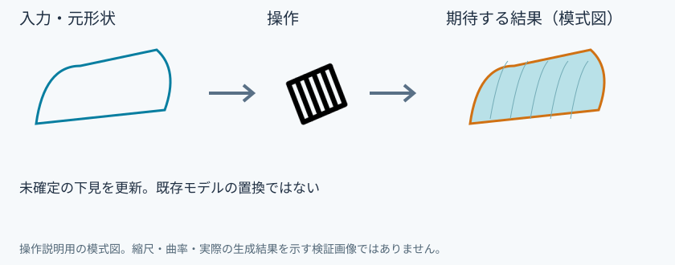
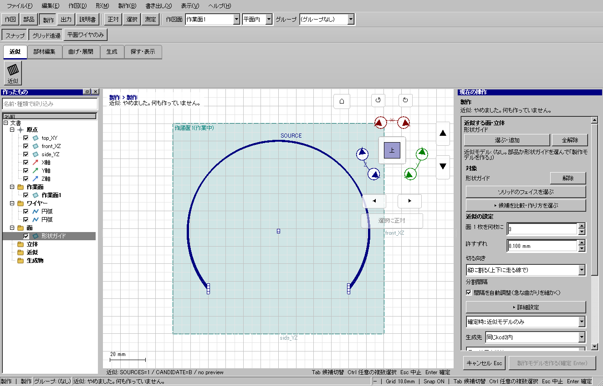

プレビュー更新
具体例: 変更した元の面から近似の下見を作り直す

準備
曲面を作り、形状を編集する
操作手順
- 元の面を選ぶ
- 近似を開始する
- 枚数や誤差を設定してプレビュー更新を押す
- 下見の誤差を確認し、必要ならEnterで新しい近似モデルを作る
設定: 未確定の下見を更新。既存モデルの置換ではない
結果を確認
現在の元面と条件を使った下見になる。確定すると別の近似モデルが追加される。
取消・やり直し
ダイアログの取消、またはペインの取消を使います。即時操作には未確定段階がありません。 確定済みの文書変更はCtrl+Z、やり直しはCtrl+Yです。保存・書出し済みのファイルはUndoの対象ではありません。
進めない場合
文書がありません。
対象欄と3Dの強調を照合し、必要な線・面・部品を各役割へ指定します。処理中は計算表示を確認し、取消が可能な処理は取消を使います。
Windows版の操作画面
